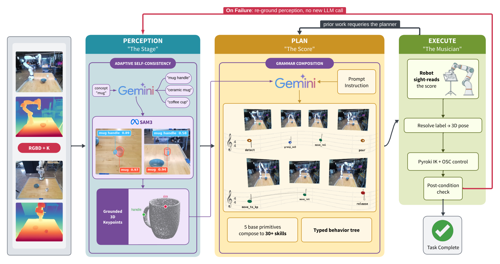
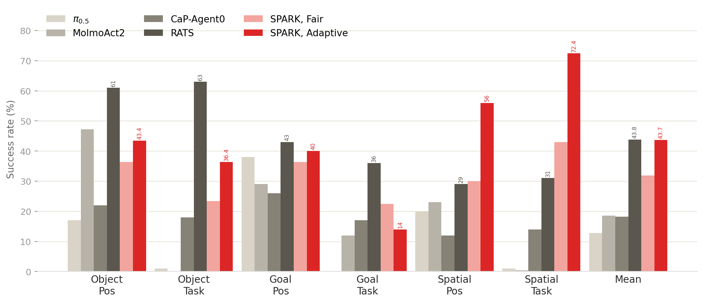
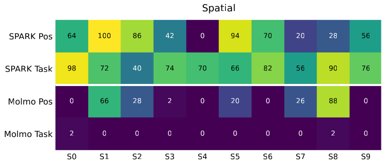
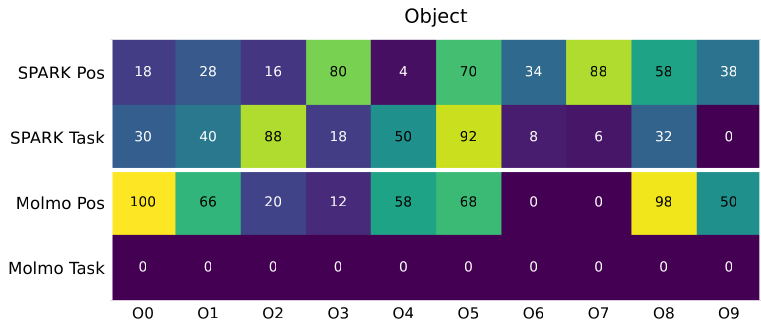
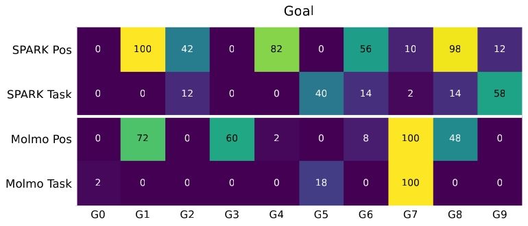
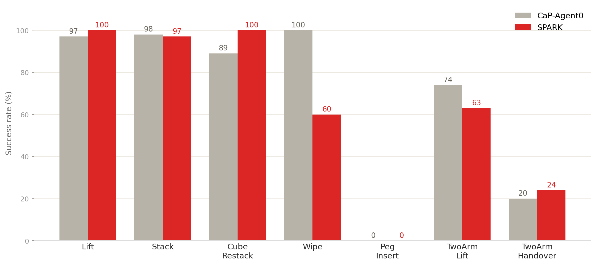

How to read the score: note position encodes the action category, duration its type, and dynamics the gripper force. Phrases play legato, waypoints blending without stops. Click any task to watch its rollout video.
We present Sequential Planning via Anchored Robotic Keypoints (Spark), a training-free neurosymbolic manipulation system that reaches 43.7% on six LIBERO-Pro position-and-task cells, more than doubling CaP-Agent0 and existing Vision-Language-Action (VLA) baselines. LIBERO-Pro extends the traditional LIBERO benchmark by perturbing object positions and task descriptions, dropping VLA models from the top of simulated leaderboards to near-zero and revealing their inherent brittleness to unseen circumstances. CaP-Agent0, a multi-turn code-generation agent, recovers part of that loss by re-querying an LLM at every turn (18.2% on LIBERO-Pro), but its costly, restart-from-scratch solution proves bulky against minor policy failures. Both these approaches spend their test-time compute on reformulating the plan, when, really, perception is the layer that fails most under position and task changes. Thus, SPARK spends its computation there. A single Gemini call composes the plan as a typed behavior tree (BT) built from composable primitives, where each primitive already contains the low-level control (motion, grasping, depth geometry) a code-generation agent would otherwise regenerate on every trial. That leaves the rest of the test-time budget for perception: a second Gemini call proposes three alternative text prompts per object, SAM3 evaluates each prompt, and we keep the prompt-to-label pair that yields the most confident detection. Then, a recovery loop retries a failed primitive against freshly detected objects, with no new LLM call. Against CaP-Agent0's S2 evaluation protocol, these alternative prompts add +27.7 points on the spatial suite and +10.0 on the object suite. The recovery loop adds +5.0 overall. SPARK runs the same primitives on three robot families (UR10e, Franka FR3, bimanual Franka) across nine unique tasks at twenty trials each, averaging 68% overall. Because each of the detector, planner, and controller modules sit behind the typed plan, they swap independently without training. Furthermore, each primitive's checkable post-condition traces a failure to the corresponding module or a kinematic limit. Every trial logs a verified, labeled trajectory, so a training-free planner that already beats VLAs can supply the data those policies need without teleoperation.

SAM3 grounds the scene from the platform cameras. One Gemini call writes the whole plan as a typed behavior tree, the score, and the robot sight-reads it without any training. The plan is symbolic, so moving an object or rewording the instruction barely changes it. “Put the bowl on the plate” calls for the same score whether the bowl starts on the left or the right. Only the pixels that the label bowl binds to have moved. Perception is the layer that breaks under that shift, so that is where SPARK spends its compute.
Each spatial argument is a keypoint label that the executor resolves to a 3D pose against live perception at the moment the robot acts. When a primitive’s post-condition fails, SPARK retracts, re-renders, re-runs SAM3, and retries the same plan with no new LLM call. The plan structure stays fixed while the spatial bindings are corrected. In simulation, a single extra call proposes three text prompts per object and keeps the cleanest SAM3 detection, which raises the spatial mean by 27.7 points and the object mean by 10.0. Five base primitives compose into multi-step behaviors with no task-specific code, and the full grammar of thirty typed skills adds the force calibration and retry logic a position-only set cannot express. Because execution flows through that grammar, every trial logs a labeled episode: trajectories for the policies that fail under these shifts, collected with no teleoperation.
LIBERO-Pro success rates (%) on the six position-and-task cells under matched fairness conditions: task language only, no privileged state, no per-task tuning.




Per-task success (%, 100 trials per task) against CaP-Agent0 under the same protocol.

The physical embodiments (UR10e, Franka FR3, Bimanual) and the simulated benchmarks run the same pipeline with objects and placements randomized per trial.
Click a rollout to open its score.
Mug pourFranka FR3
Sweep to dustpanFranka FR3, bird's-eye camera
T-shirt foldFranka FR3
Utensils sortFranka FR3, bird's-eye camera
T-shirt foldBimanual Franka
Plushie in bowlUR10e
Utensils in trayUR10e
Occam's Razor?Franka FR3
Sponge washFranka FR3, repeat trial
Mug pourFranka FR3, bird's-eye camera
T-shirt fold failure caseBimanual Franka, partial fold on blue shirt
T-shirt fold failure caseBimanual Franka, missed hem pinch
LiftCaP-Bench sim, 100% at 100 trials
StackCaP-Bench sim, 97% at 100 trials
Cube restackCaP-Bench sim, 100% at 100 trials
Two-arm liftCaP-Bench sim, 63% at 100 trials
WipeCaP-Bench sim, 60% at 100 trials
Peg insertCaP-Bench sim, full-pose descent beyond the OSC grammar
Two-arm handoverCaP-Bench sim, 24% at 100 trials
Cream cheese to basketLIBERO-Pro, object suite, pass
Milk to basketLIBERO-Pro, object suite, pass
Tomato sauce to basketLIBERO-Pro, object suite, pass
Bowl next to ramekin onto plateLIBERO-Pro, spatial suite, pass
Bowl between plate and ramekin onto plateLIBERO-Pro, spatial suite, pass
Bowl from table center onto plateLIBERO-Pro, spatial suite, pass
Bowl on stoveLIBERO-Pro, goal suite, pass
Bowl on plateLIBERO-Pro, goal suite, pass
Bowl on top of cabinetLIBERO-Pro, goal suite, pass
Cream cheese in bowlLIBERO-Pro, goal suite, pass
Wine bottle on rackLIBERO-Pro, goal suite, pass
On hardware the same pipeline averages 68% across eleven task-embodiment cells (nine unique tasks, twenty trials each) over three robot families, with no retraining.
Bryce Grant is supported by an NSF Graduate Research Fellowship. This work was sponsored by an NVIDIA Academic Grant.
@misc{grant2026spark,
title = {Sequential Planning via Anchored Robotic Keypoints},
author = {Grant, Bryce and Rothenberg, Aryeh and Senning, Logan
and Chua, Zonghe and Patterson, Zach and Wang, Peng},
year = {2026}
}